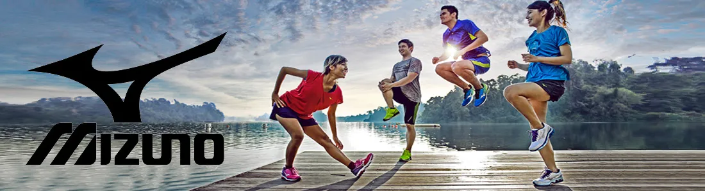
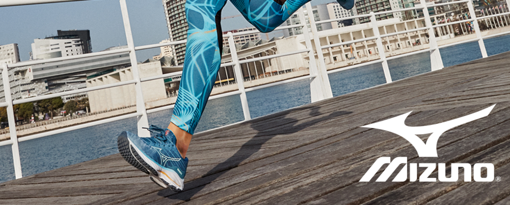
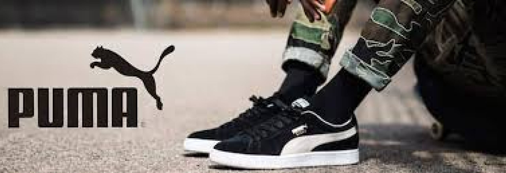
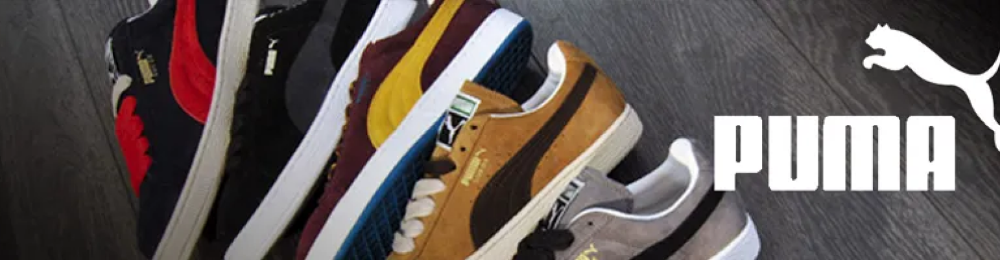

Super Star
R$499,99
O Adidas Superstar é um tênis icônico lançado em 1969, inicialmente para o basquete. Seu design se destaca pela ponta de borracha e pelas três listras laterais. Feito de couro ou sintético, oferece conforto e durabilidade. Ao longo dos anos, o modelo se tornou um símbolo de estilo urbano.

Samba
R$379,99
O Tênis Samba da Adidas é um clássico urbano, com design inspirado no futebol de salão. Feito com couro ou camurça e sola de borracha, combina estilo retro e conforto, sendo ideal para o dia a dia. Suas 3 listras laterais e biqueira distinta são marcas registradas.

Response Runner
R$419,99
O Response Runner da Adidas é um tênis confortável e versátil, com design inspirado nos anos 2000. Conta com amortecimento de EVA e uma parte superior respirável, garantindo conforto e suporte durante corridas e treinos. Ideal para quem busca estilo e desempenho.



Prophecy 8
R$419,99
O Mizuno Prophecy 8 é um tênis de alto desempenho, desenvolvido para corredores que buscam conforto e amortecimento superior. Com a tecnologia Mizuno Wave, ele oferece estabilidade e absorção de impacto em cada pisada. Seu design futurista e a entressola de alto rebound garantem uma corrida suave e responsiva, ideal para treinos longos e intensos.

Jet 7
R$429,99
O Jet 7 da Mizuno é um tênis esportivo projetado para conforto e desempenho. Com um cabedal em malha respirável e detalhes em material sintético, oferece excelente suporte e ventilação. Seu amortecimento com tecnologia Mizuno Wave garante estabilidade e conforto durante a prática de atividades físicas. Ideal para corredores e atletas, o Jet 7 combina desempenho e estilo.

Goya
R$369,99
O Goya da Mizuno é um tênis de corrida focado em conforto e desempenho. Com um cabedal em malha respirável e material sintético, oferece leveza e ventilação. Seu sistema de amortecimento proporciona suavidade e estabilidade em cada passo. Ideal para corredores de diferentes níveis, o Goya combina tecnologia e design moderno, garantindo uma experiência confortável e de alta performance.

Air Jordan 1
R$569,99
O Air Jordan 1 é um clássico dos tênis de basquete, lançado originalmente em 1985. Com seu design icônico e combinação de couro e sintético, o modelo oferece conforto e estilo, tanto dentro quanto fora das quadras. Seu amortecimento e suporte o tornam uma escolha popular para atletas, enquanto o visual atemporal faz dele um favorito entre os fãs de sneakers.

Air Force
R$769,99
O Air Force 1 é um dos modelos mais famosos da Nike, lançado em 1982. Com seu design simples e elegante, é feito de couro e sintético, proporcionando conforto e durabilidade. Originalmente criado para o basquete, o modelo se popularizou no streetwear, sendo reconhecido por sua versatilidade e estilo atemporal.

Air Max
R$719,99
O Nike Air Max é um ícone de conforto e estilo, famoso pela tecnologia de amortecimento visível na entressola. Lançado em 1987, o modelo combina inovação e design moderno, oferecendo suporte e leveza para corridas e uso diário, com um visual que permanece atemporal e altamente valorizado no universo dos sneakers.



Suede
R$579,99
O Puma Suede é um clássico da marca, lançado em 1968. Com seu cabedal em camurça, oferece um visual elegante e ao mesmo tempo descontraído. As três listras laterais são um detalhe marcante, representando a identidade da Puma. Este modelo, confortável e durável, é ideal tanto para o uso casual quanto para looks mais urbanos. O Puma Suede se mantém popular ao longo dos anos, sendo sinônimo de estilo e versatilidade.

RBD Game
R$639,99
O RBD Game da Puma é um tênis de estilo esportivo e casual, inspirado nos modelos clássicos de basquete. Com um design clean e moderno, ele apresenta um cabedal em couro e sintético, com detalhes em camurça para um toque de sofisticação. Suas três listras laterais são um dos destaques, trazendo o DNA da Puma. Confortável e versátil, o RBD Game combina bem com diversos looks, sendo uma escolha popular para quem busca estilo e praticidade no dia a dia.

Wired Run
R$619,99
O Puma Wired Run é um tênis de desempenho com design moderno e aerodinâmico, ideal para quem busca conforto durante atividades físicas. Sua parte superior em malha respirável proporciona leveza e ventilação, enquanto a entressola de EVA oferece amortecimento eficiente. Com visual esportivo e versátil, é perfeito para treinos ou uso casual no dia a dia.